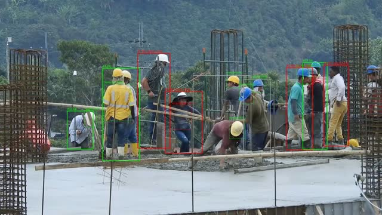
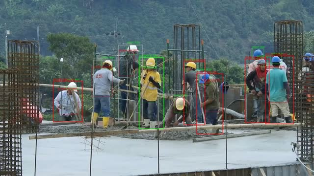

A vote, not a frame
PPE detectors flicker. A 3-second majority with hysteresis removes the blinking red boxes that make per-frame systems unusable on a monitor.
Checks personal protective equipment on every worker in a video. Each person is tracked and re-identified, every hardhat, vest, glove, goggle and mask is matched to its wearer, and a 3-second majority vote turns a worker red only when the evidence holds. At the end, a vision-language model writes a one-line report for each worker with a confirmed violation.
Two detectors run on every frame: one finds the people, the other finds PPE items as worn or missing. Each item is assigned to the person whose box it overlaps, so the system reasons per worker instead of per box. Re-identification keeps the same id when someone leaves and comes back.
Single frames are noisy, so a worker's box never follows them directly. For each PPE item the last 3 seconds are read as worn, missing or unknown, and the state only changes when 60% of the informative frames agree; unknown frames never flip it.
On a six-clip compilation of construction sites, carpenters, a warehouse and an industrial structure (about 83 s), the default SafetyVision model confirmed these violations:



| Clip | Confirmed violations |
|---|---|
| Construction site | NO-Safety Vest, NO-Hardhat |
| Industrial structure | NO-Safety Vest, NO-Goggles |
| Carpenters | NO-Safety Vest |
| Warehouse aisle | NO-Safety Vest, NO-Hardhat, NO-Goggles |
| Compliant worker | none: hardhat and vest stay green |
Footage: Pexels clips listed in the repository. VLM answers are model outputs, so the report cards are meant for a human reviewer.
In this rendered demo the video freezes the first time a worker is confirmed as a violation: the crop is enlarged, SmolVLM-500M runs on it on the CPU, and its answer is shown before playback resumes.
git clone https://github.com/karemdm/ppe-compliance-vlm.git
cd ppe-compliance-vlm
python3 -m venv .venv
source .venv/bin/activate
pip install -r requirements.txt
pip install -e .git clone https://github.com/karemdm/ppe-compliance-vlm.git
cd ppe-compliance-vlm
python -m venv .venv
.venv\Scripts\Activate.ps1
pip install -r requirements.txt
pip install -e .git clone https://github.com/karemdm/ppe-compliance-vlm.git
cd ppe-compliance-vlm
python -m venv .venv
.venv\Scripts\activate.bat
pip install -r requirements.txt
pip install -e .ppe-compliance --vlm-model HuggingFaceTB/SmolVLM-500M-Instructppe-compliance analyze --input samples/construction_site.mp4 --output outputs/report.json --save-video outputs/construction_site.mp4 --no-vlmPPE detectors flicker. A 3-second majority with hysteresis removes the blinking red boxes that make per-frame systems unusable on a monitor.
Matching PPE to the person who wears it gives one decision per worker and one report per worker, which is what a safety officer needs.
Workers walk out of frame and come back. An appearance gallery keeps their id, so one person is one report instead of five.
The vision-language model writes a short, readable sentence from the crop. It runs only on confirmed cases, so it stays affordable even on a CPU.
SafetyVision (YOLOv8s, 13 classes) or CHD (YOLO26-L); the infraction list adapts to the chosen model.
The app caches the processed video, so changing the infraction filter re-selects reports instantly.